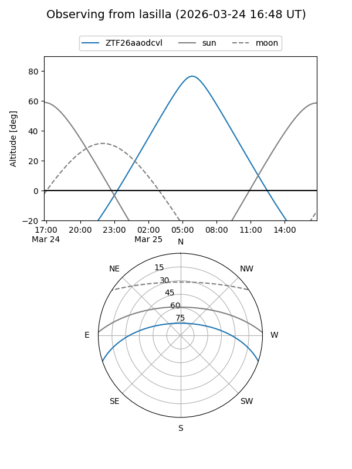
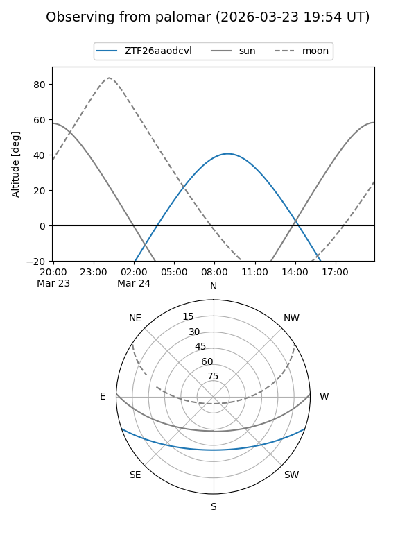

ZTF26aaodcvl
Target ZTF26aaodcvl at 2026-03-24 09:43
Aliases and brokers:
FINK: link
Lasair: link
ALeRCE: link
alt names
ZTF26aaodcvl (ztf,fink_ztf)
Coordinates:
equatorial (ra, dec) = 199.5271,-15.83378
equatorial (HMS+DMS) = 13:18:06.52,-15:50:01.60
galactic (l, b) = (312.2803,+46.55329)
Flags:
Photometry:
last ztfg=19.40
1 ztfg detections
Lightcurve
Visibility


Additional plots